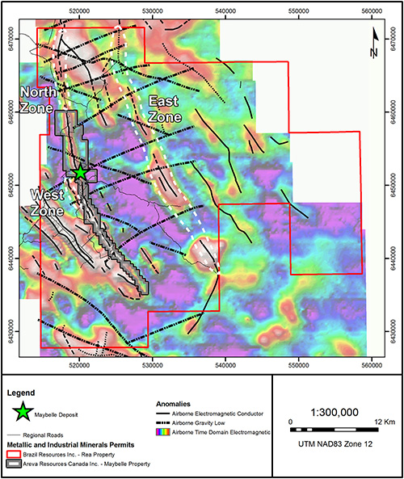

Vancouver, British Columbia – June 1, 2015 – Brazil Resources Inc. (the “Company” or “Brazil Resources”) (TSX-V: BRI; OTCQX: BRIZF) is pleased to announce the Company has received authorization from the Alberta Department of Environment and Sustainable Resource Development for a proposed drill program on the Rea uranium project ("Project") in northeast Alberta. The Project is located in the western portion of the Athabasca Basin, which the Company believes is an underexplored region and which has seen renewed exploration activity with the recent discoveries in the Patterson Lake area by Fission Uranium Corp. ("Fission"), NexGen Energy Ltd. ("NexGen") and PurePoint Uranium Group Inc. ("PurePoint").
The Rea project is one of the largest land holdings in the western Athabasca Basin at 1,253 sq km (125,328 ha). It is owned by Brazil Resources (75%) and AREVA Resources Canada Inc. ("AREVA") (25%), and completely surrounds AREVA's Maybelle River project. The Maybelle River project covers the north-northwest striking Maybelle River Shear Zone ("MRSZ"), which hosts relatively shallow (<200 m), high-grade uranium mineralization at the Maybelle River deposit, which was discovered in 1988. The deposit was discovered in 1988 and published drill intersections include 17.7% U3O8 over 5m in MR-39 and 4.7% U3O8 over 1.7 m in MR-34 (Wheatley and Cutts, 2013)1. The MRSZ extends an additional 11 km north of the Maybelle River project across the Rea project, which will be the focus of the proposed exploration and drill program.
Garnet Dawson, CEO, stated: “We are excited to have received authorization from the Alberta government to explore our Rea project. AREVA is likewise excited to explore the extensions of their major discovery at the Maybelle River project. Brazil Resources and AREVA are currently reviewing the exploration program and budget, and once approved, a start date will be announced. The proposed program targets a major regional shear zone that hosts high-grade, near-surface uranium mineralization only 9 km to the south at the Maybelle River deposit.
“Given that NexGen's Arrow and PurePoint's Spitfire discoveries are approximately 7 and 13 kilometres northeast of Fission's Triple R deposit and hosted within the same regional shear zone, we believe that there is good potential to find additional deposits along the MRSZ. We’ve also been gratified to find the Alberta government very interested to extend exploration into their large and highly prospective portion of the Athabasca Basin, which has received very little exploration thus far."
The high priority target, called the North Zone, is located immediately north of AREVA's permits, and has received 7 historic drill holes, which tested the MRSZ over a strike distance of approximately 3 km. Several of these holes intersected fault breccias in the overlying Athabasca Basin sedimentary rocks along with associated clay alteration, dravite, anomalous uranium and pathfinder elements (copper, lead, nickel, arsenic, boron and vanadium), features that are commonly associated with unconformity-type uranium deposits. The proposed drill holes will test below these historic holes closer to the intersection of the MRSZ and the unconformity separating the Athabasca Basin sedimentary rocks and the underlying Archean basement. The target area has no lakes or streams, so permitting, exploration and potentially capital costs are expected to be relatively lower than in other areas of the Athabasca.
A second high priority target called the West Zone is an airborne electromagnetic ("EM") conductor located 1.5 km west of the Maybelle River deposit and sub-parallel to the MRSZ. The proposed program will include a ground EM survey to better define the location of the airborne EM conductor and will be followed-up by diamond drilling. The map below shows the location of the North and West Zone targets with respect to AREVA's Maybelle River deposit as well as several other high-priority EM-gravity targets located along the East Zone that are proposed to be followed-up in future exploration programs.

Recent high-grade uranium discoveries located along a regional shear zone in the Patterson Lake area highlights the potential for large shear zones, such as the MRSZ on the Rea Project, to host several deposits in addition to the known Maybelle River deposit.
Paulo Pereira, Brazil Resources', President of the Company, has reviewed and approved the technical information contained in this news release. Mr. Pereira holds a Bachelors degree in Geology from Universidade do Amazonas in Brazil, is a Qualified Person as defined in National Instrument 43-101 and is a member of the Association of Professional Geoscientists of Ontario. Due to their nature, exploration information relating to the Maybelle River and other third party projects near the Rea Project have not been verified by the Qualified Person.
1Wheatley, K. and Cutts, C., 2013: Overview of the Dragon Lake Uranium Prospect, Maybelle River Area, Northeastern Alberta, Exploration and Mining Geology, Vol. 21, p 51-62, Canadian Institute of Mining, Metallurgy and Petroleum. Information in this news release regarding the Maybelle River and other projects in the region, including historical drilling, are presented for information purposes only and have not been verified by Brazil Resources. Such information is not indicative of exploration results or mineralization at the Rea Project. Significantly less exploration has been conducted on the Rea Project compared to such third-party projects, and there can be no assurance that the results of any exploration programs on the Rea Project will be similar.
For further information regarding the Rea Project, please refer to the technical report dated effective September 12, 2014 and titled ”Technical Report on the Rea Property, Northeastern Alberta, Canada”, a copy of which is available under the Company's profile on SEDAR at www.sedar.com.
About Brazil Resources Inc.
Brazil Resources Inc. is a public mineral exploration company with a focus on the acquisition and development of projects in emerging producing gold districts in Brazil, Paraguay and other parts of South America. Currently, Brazil Resources is advancing its Cachoeira and São Jorge Gold Projects located in the State of Pará, northeastern Brazil and its Rea Uranium Project in the western Athabasca Basin in northeast Alberta, Canada.
For additional information, please contact:
Brazil Resources Inc.
Amir Adnani, Chairman
Garnet Dawson, CEO
Telephone: (855) 630-1001
Forward Looking Statements
This document contains certain forward-looking statements that reflect the current views and/or expectations of Brazil Resources with respect to its business and future events, including the Company's expectations respecting the Rea Project and future exploration program. Forward-looking statements are based on the then-current expectations, beliefs, assumptions, estimates and forecasts about the business and the markets in which Brazil Resources operates, including that the Company and its joint venture partner will be able to finalize and agree upon exploration programs, budgets and other matters and that such exploration programs will be carried out as planned. Investors are cautioned that all forward-looking statements involve risks and uncertainties, including: the inherent risks involved in the exploration and development of mineral properties, the uncertainties involved in interpreting drill results and other exploration data, the potential for delays in exploration or development activities, the geology, grade and continuity of mineral deposits, the possibility that future exploration, development or mining results will not be consistent with the Company's expectations, accidents, equipment breakdowns, title and permitting matters, labour disputes or other unanticipated difficulties with or interruptions in operations, fluctuating metal prices, unanticipated costs and expenses, uncertainties relating to the availability and costs of financing needed in the future, including to fund any exploration programs on the Rea Project and any inability of the Company and its joint venture partner to finalize or agree upon requisite exploration programs, budgets or other matters. These risks, as well as others, including those set forth in Brazil Resources' filings with Canadian securities regulators, could cause actual results and events to vary significantly. Accordingly, readers should not place undue reliance on forward-looking statements and information. There can be no assurance that forward-looking information, or the material factors or assumptions used to develop such forward looking information, will prove to be accurate. Brazil Resources does not undertake any obligations to release publicly any revisions for updating any voluntary forward-looking statements, except as required by applicable securities law. Neither the TSX Venture Exchange nor its Regulation Services Provider (as that term is defined in the policies of the TSX Venture Exchange) accepts responsibility for the adequacy or accuracy of this news release.